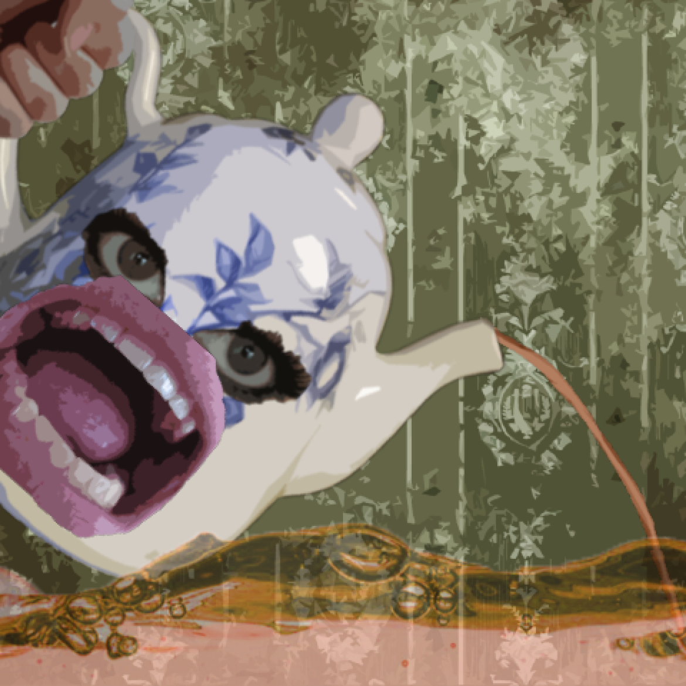

I’m a little teapot,
Short and stout,
Here is my handle,
Here is my spout.
When I get all steamed up,
Hear me shout,
Tip me over and pour me out!

Game 16/100
I’m a Little Teapot
I’m a little teapot, Short and stout, Here is my handle, Here is my spout. When I get all steamed up, Hear me shout, Tip me over and pour me out!
Year2013
Development1 day
AvailabilityPlayable